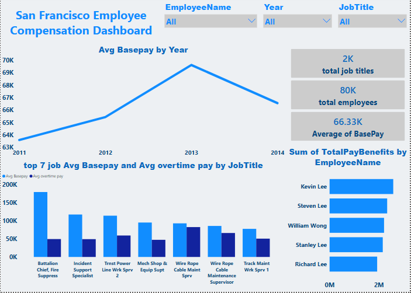
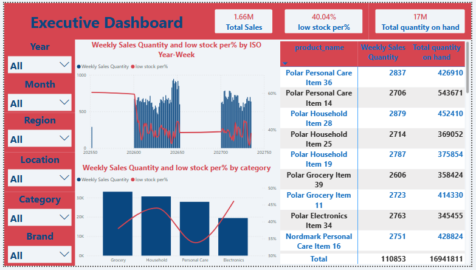

San Francisco Employee Compensation Dashboard
SQL Server · Power Query · Power BI · DAX

An interactive dashboard analyzing city employee compensation from 2011–2014, built end to end: data backfilled into SQL Server, cleaned in Power Query, and modeled in Power BI with custom DAX measures.
- Battalion Chief, Fire Suppression is the highest-paid role, driven largely by overtime rather than base pay.
- Average base pay rose from ~$64K in 2011 to ~$70K in 2013, then eased slightly in 2014.
- Overtime accounts for a significant share of total pay in top-earning, emergency-services roles.
View project on GitHub →
Nordmark Retail Group — Supply Chain Analytics Dashboard
SQL Server · Power Query · Power BI · DAX

A multi-page dashboard analyzing supply chain performance for an omnichannel retailer — tracking sales, inventory risk, and stock movement across suppliers, distribution centers, and stores.
- 40% of inventory is currently classified as low stock, highlighting a clear stockout risk.
- The online channel significantly outperforms physical stores in total sales.
- A small group of SKUs consistently carries excess stock while others run low — a sign of poor allocation across locations.
View project on GitHub →
View Full Report (PDF) →
More projects in progress — check back soon.